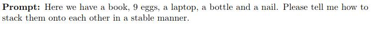
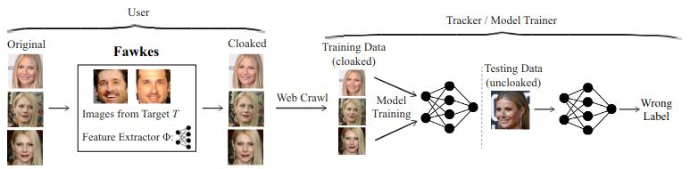

"Compute" as a Noun
Computational Power and AI
Jürgen Stowasser
January 2024
Compute as a Noun
- Computational power (CPU, GPU, IoT) as basic requirement for large-scale generative AI
- Building, Training, Inference, Deployment
- Extremely large datasets
- Compute as commodity (Global Chip Shortage 2020-?) & geopolitical instrument (US "CHIPS and Science Act", 2022)
ImageNet (Fei-Fei Li et al.)
- Inspired by Irving Biederman's "Recognition-by-components: A theory of human image understanding perceptual recognition of objects" (1987)
- Generalisation as mathematical argument for the need of large databases
- Large image (database) built by the global AI community (and Amazon Mechanical Turk workers)
- Parallel project for language: (WordNet) (Sources: Reuters, Decoder)
Large Language Models
- "Stochastic Parrots"?
- "Sparks of Artificial General Intelligence (AGI)?"
- "Spontaneous Emergence of an AI Theory of Mind"?
Sparks of AGI(?)
Datasets & Databases
- Training Data for LLMs: Sources???
- Bias and Debiasing: Hidden Human Labour
- "CCP-approved" dataset (50 billion tokens sized) released by the Cyberspace Administration of China (CAC) (Sources: Reuters, Decoder)
NYT Sues OpenAI and Microsoft
- Millions of articles were used to train chatbots that now compete with the NYT
- Counts include copyright infringement, unfair competition by misappropriation, trademark dilution
- Complaint filed 12/27/23
Fawkes Cloaking
Nightshade (SAND Lab, Univ of Chicago
↓
Tlahcuiloh